Funded by: National Highway Traffic Safety Administration (NHTSA)
Abstract: Urban areas in the US are estimated to have faced a 60% increase in pedestrian fatalities over the past decade (GHSA, 2023). However, because these events are inherently rare, it is difficult to develop preventative measures to mitigate collision risk. An important pit stop on the road to safer streets is therefore developing robust geospatial estimates of current pedestrian activity levels. Robust estimates of pedestrian activity serve as a proxy measure for crash likelihood, as locations containing high pedestrian activity levels are naturally prone to higher pedestrian-vehicle crash rates. This project aims to predict pedestrian-vehicle collision risk based on pedestrian exposure and environmental factors at intersections.
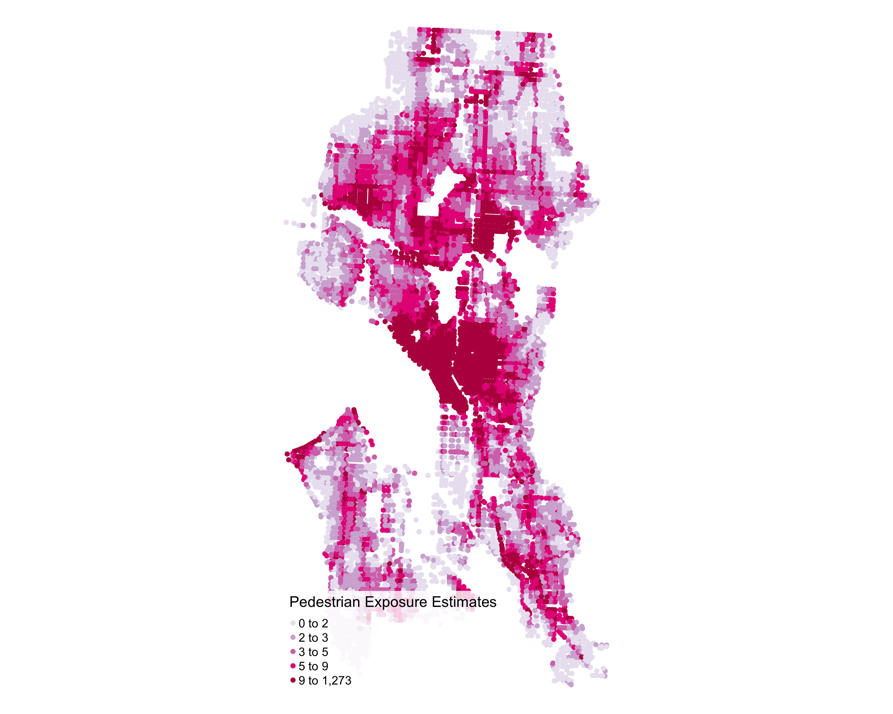
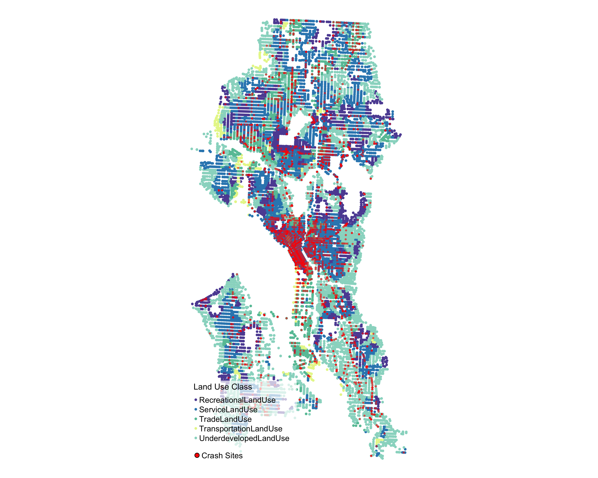
Abstract: In response to rising VRU deaths in dense urban settings, and increased support for complete street designs, this project examines the relationship between mode choice and the surrounding built environment. This projects uses New York City as a : mode choice data and trip purpose are from the Regional Establishment Survey (RES), and GIS-linked built environment features (i.e, high-visibility crosswalks, average roadway width, slow-speed zone) are provided by the . A mixed logit model is developed to compare individual heterogeneity in , , and mode choices with local built environment support for observed choices. Sociodemographics such as age, income, and mobility status are also considered. An alternative-specific travel time variable is considered, and a more thorough discussion of mode choice elasticity to changes in the local microenvironment is provided.
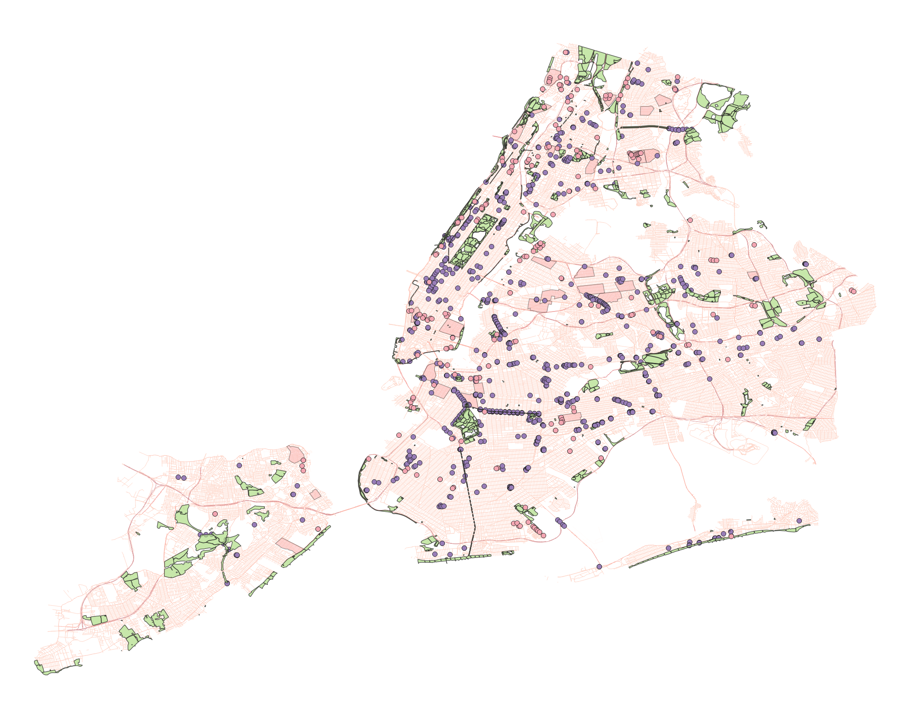
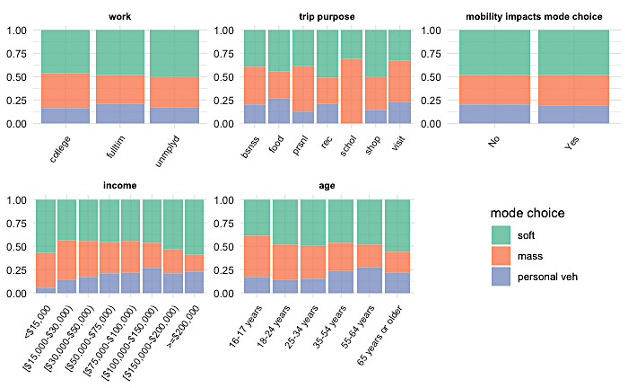
Funded by: National Science Foundation (NSF)
Funded by: National Science Foundation (NSF)
Abstract: This research develops comprehensive profiles of older drivers to enhance support systems and reduce the likelihood of accidents. Building a database of naturalistic driving behavior is challenging and costly, making it beneficial to map profiles across databases consisting of different subpopulations. This study utilizes the Strategic Highway Research Program (SHRP2), a naturalistic driving database, and the Survey of Health, Aging, and Retirement in Europe (SHARE) database to identify personal characteristics that could be mapped between the two databases. The four types of variables mapped included medical conditions, risk-taking behavior, lifestyle, and (physiological, cognitive) function. A combination of Principle Component Analysis, Multiple Correspondence Analysis, and Factor Analysis for Mixed Data reduced the SHRP2 NDS and SHARE combined data to features representing the physical condition, health, lifestyle, and (physiological, cognitive) function of 60 50+ aged personal profiles. Using a Hierarchical Agglomerative Clustering approach with the mapped profiles revealed a three cluster solution with a between cluster variation. Significant differences in driving behavior were identified between the three clusters, with Cluster 3 showing higher risk-taking tendencies and near miss frequencies. The research highlights the feasibility of mapping personal profiles across databases to produce multidimensional driving profiles. These insights can benefit road users, older individuals and their families, policy makers, researchers, and health and social care professionals. By utilizing the identified driver profiles, industry designers can tailor Advanced Driver Assistance Systems (ADAS)/Autonomous Driving Systems (ADS) to individual needs. Health care professionals can use the data to supplement fitness-to-drive assessments, and older individuals and their families can make informed decisions about driving support.
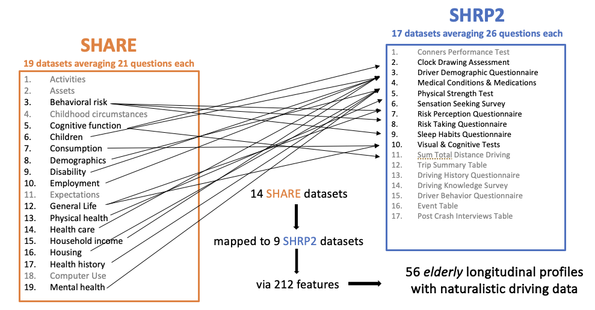
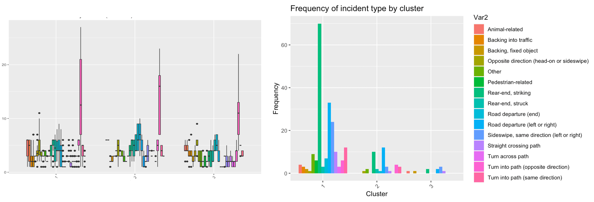
Funded by: Federal Highway Administration (FHWA)
Abstract: With more than 42,000 roadway fatalities in 2022, transportation safety researchers are interested in gathering a deeper understanding of how drivers behave, interact, and make decisions while navigating the roadway environment. Within the past decade, researchers have discovered that approximately 50 percent of a driver’s time is spent engaging in non-driving-related tasks (Dingus et al., 2016; Young et al., 2019). This project, Investigating How Multimodal Environments Affect Multitasking Driving Behaviors, approached this issue of distraction with data from the SHRP2 NDS, which is the largest naturalistic driving study to date. More specifically, the research team targeted 19 urban locations that contained pedestrian and cyclist facilities (crosswalks, bike treatments) to investigate a driver’s secondary task engagement amid other road users. Three primary groups of variables were considered in the analysis: video data to label and identify secondary task behavior and the urban environment, kinematics that describe the state (acceleration, speed, etc.) of the vehicle throughout each video file, and demographic data that were connected anonymously back to the participants in the video data. Initially, two mixed-effect binary logistic regression models were fitted to crosswalk and bike treatment data, respectively; these models were useful to confirm significant findings from the pilot study. In addition to these significant relationships, two Bayesian networks were implemented (crosswalks, bike treatments), which provided a graphical representation of the conditional dependencies between the variables considered in the analysis. Bayesian networks are useful in modeling complex systems with uncertain relationships and have been widely used in many fields, including transportation safety. The results of this study have important implications for transportation safety that could, for example, improve vulnerable road user facility design or inform future advanced driver assist system (ADAS) development.
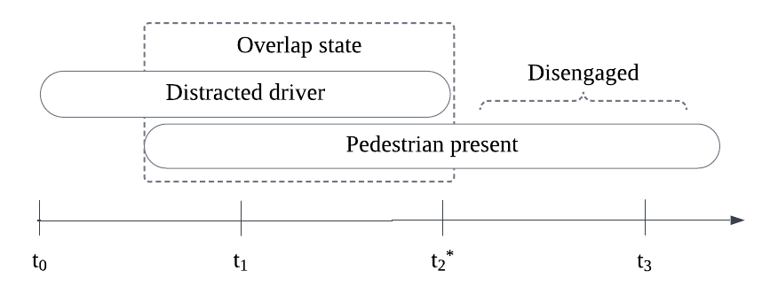
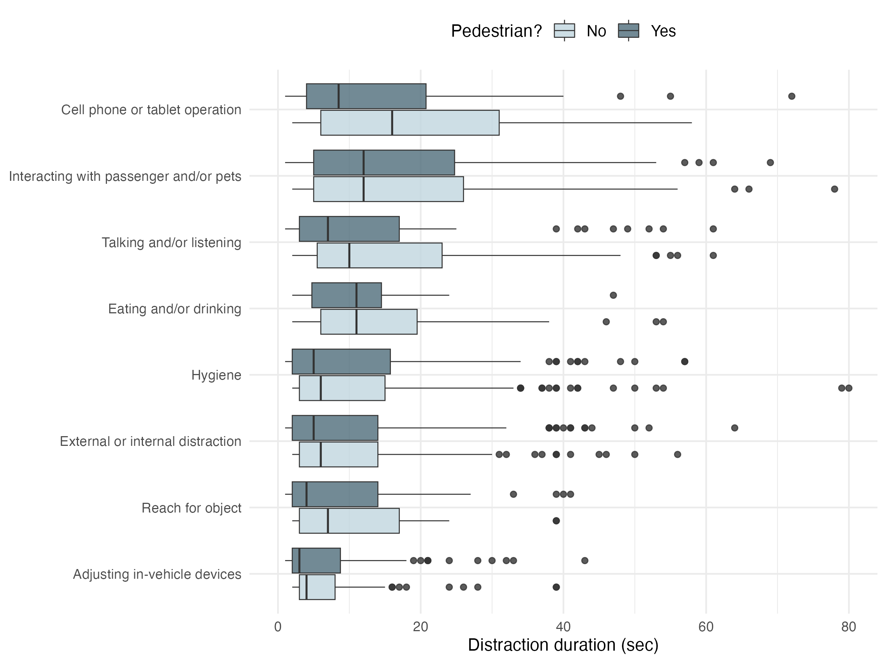
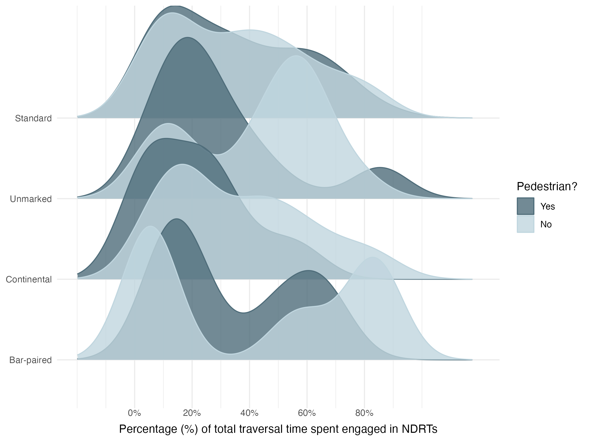
Funded by: National Highway Traffic Safety Administration (NHTSA)
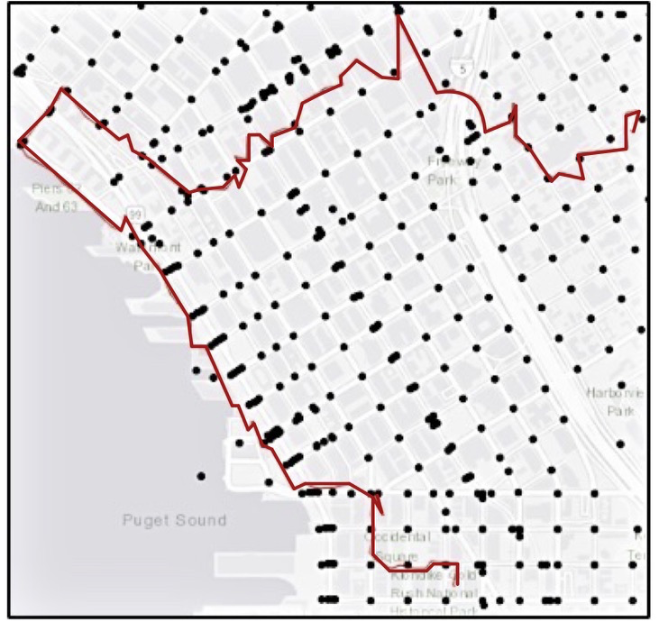
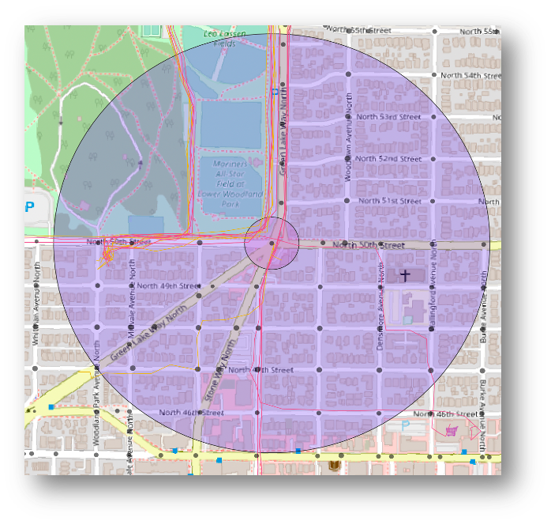
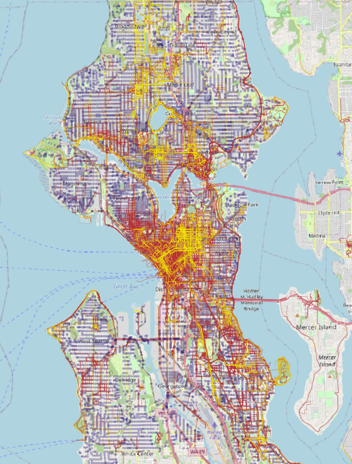